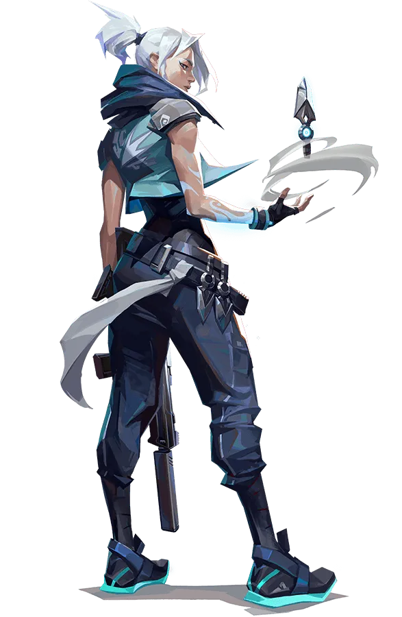

Jett

Compétences
- Cloudburst (C): Lance un projectile qui explose en un brouillard court, bloquant la vision. Peut être courbé pendant le vol en maintenant les touches de direction.
- Updraft (Q): Propulse Jett dans les airs. Idéal pour atteindre des hauteurs ou éviter des tirs.
- Tailwind (E): Jett se propulse rapidement dans la direction qu'elle regarde. Parfait pour se repositionner ou fuir des situations périlleuses.
- Blade Storm (X): L'ultime de Jett, elle équipe plusieurs couteaux précis qui peuvent être lancés individuellement ou tous en rafale. Recharge un couteau sur un kill.
Cartes Recommandées
| Carte |
Raison |
Nombre de fois joué |
| Bind |
Utilisez ses capacités pour naviguer rapidement entre les sites à travers les téléporteurs. |
25000 |
| Haven |
Excellente pour défendre ou attaquer les trois sites avec ses compétences de mobilité. |
10000 |
Conseils d'Utilisation
Utilisez l'Updraft et Tailwind pour surprendre les ennemis en attaquant depuis des angles inattendus. Cloudburst peut vous donner les quelques secondes nécessaires pour recharger ou fuir. Essayez de garder votre ultime pour des situations où vous êtes à court de munitions ou devez combattre plusieurs ennemis à la fois.